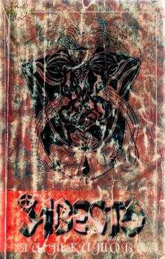

AYQadimgi "Avesto" kitobining "Yasht" naski ilmiy-izohli tarjimasi.
Ushbu kitob qadimgi ajdodlarimizning yozma yodgorligi bo'lgan "Avesto"ning "Yasht" (Alkovlar) naskining ilmiy-izohli tarjimasidir. Unda zardushtiylik dini, Axura Mazda va u yaratgan ma'budalar sha'nigacha bo'lgan qadimiy madaniy-ma'naviy meros haqida qimmatli ma'lumotlar berilgan.